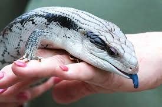

bluetongue skink
홈으로 Blue-Tongued Skink (Tiliqua scincoides intermedia) This care sheet applies specifically to the Northern blue-tongued skink, but most species and subspecies of blue-tongued skinks can be kept using these guidelines. Blue-tongued skinks are ideal for beginners, as they have loads of personality and great dispositions. Blue-tongued skinks are also an excellent choice for advanced hobbyists, as breeding them can be challenging and certain blue-tongue species and localities are extremely rare.